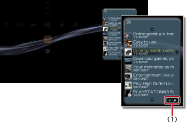

Network > Using the information board
Using the information board
Korzystanie z tablicy informacyjnej
Tablica informacyjna jest zawsze wyświetlana na ekranie interfejsu XMB™ i przedstawia najnowsze doniesienia o grach lub najnowsze informacje o sklepie PlayStation®Store.
Wskazówki
- Aby najnowsze informacje były wyświetlane, konsola PS3™ musi mieć skonfigurowane połączenie z Internetem. Szczegółowe informacje o ustawieniach sieciowych można znaleźć w temacie
 (Settings) >
(Settings) >  (Network Settings) > [Internet Connection Settings] w niniejszej instrukcji.
(Network Settings) > [Internet Connection Settings] w niniejszej instrukcji. - Położenia tablicy informacyjnej na ekranie ani wielkości jej liter nie można zmienić.
- Układ tablicy informacyjnej może ulec zmianie bez wcześniejszego powiadomienia. Ponadto układ ten bywa różny w zależności od kraju lub regionu.
Displaying detailed news information
Wyświetlanie najnowszych informacji w sposób szczegółowy
1. |
Wybierz opcję 
|
||||
|---|---|---|---|---|---|
2. |
Wybierz nagłówek informacji, której szczegóły chcesz poznać, a następnie naciśnij przycisk
|
 .
.
 .
. (Internet Browser) i wyświetlić witrynę internetową. Ta opcja nie jest wyświetlana w wypadku informacji, które nie mają łącza do witryny internetowej.
(Internet Browser) i wyświetlić witrynę internetową. Ta opcja nie jest wyświetlana w wypadku informacji, które nie mają łącza do witryny internetowej.Setting to not display the information board
Ustawianie ukrycia tablicy informacyjnej
Wybierz opcję  (Information Board) w kategorii
(Information Board) w kategorii  (Network), a następnie naciśnij przycisk
(Network), a następnie naciśnij przycisk  . Następnie z menu opcji wybierz opcję [Do Not Display].
. Następnie z menu opcji wybierz opcję [Do Not Display].
Wskazówka
Aby tablica informacyjna była znów wyświetlana, wybierz jej ikonę ponownie, naciśnij przycisk , a następnie z menu opcji wybierz opcję [Display].